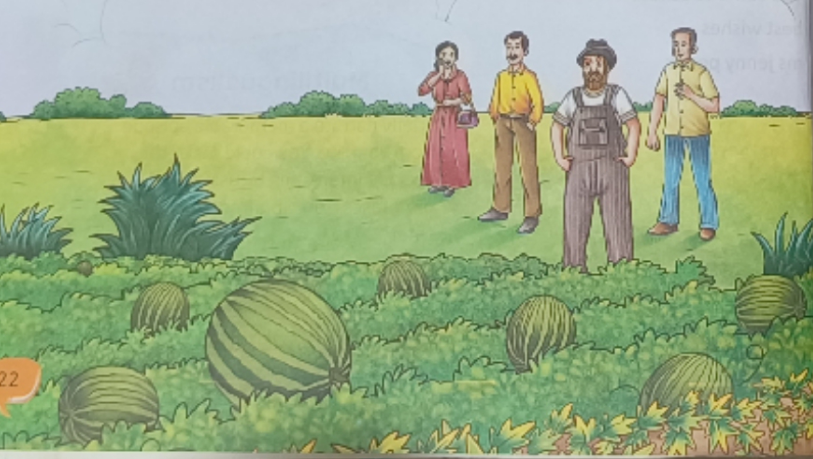
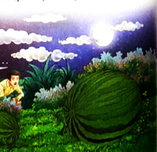
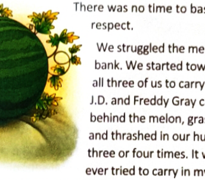
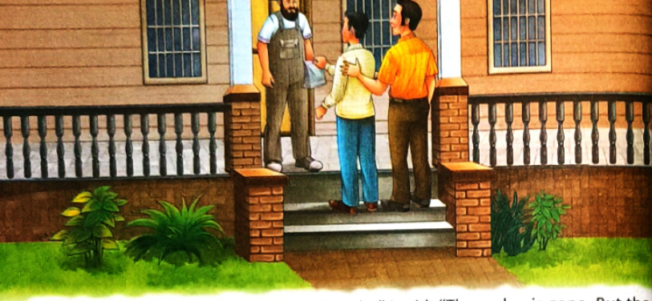
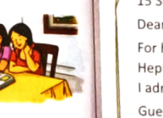

By Borden Deal • A Story of Moral Awakening, Peer Pressure & Redemption
I was sixteen. We had moved just the year before, and sixteen is still young enough that the bunch makes a difference. I had a bunch, all right, but they weren't sure of me yet. I didn't know why. Maybe because I'd lived in town, and my father still worked there instead of farming, like the other fathers did. The boys I knew, even Freddy Gray and J.D., still kept a small distance between us. We were all afraid of Mr Wills. Mr Wills was a big man. He had bright, fierce eyes under heavy brows and when he looked down at you, you just withered.
Mr Wills was the best farmer in the community. My father said he could drive a stick into the ground and grow a tree out of it. Mr Wills fought the earth when he worked it. Mr Wills always planted the little field directly behind his barn with watermelons. But he didn't have any idea of sharing them with the boys of the neighborhood. He was fiercer about his melons than anything else; if you just happened to walk close to his melon patch, you'd see Mr Wills standing and watching you with a glower on his face. And likely as not he'd have his gun under his arm. That summer I was sixteen,
Mr Wills raised the greatest watermelon ever seen in the country. It grew in the very middle of his patch, three times as big as any melon anybody had ever seen. Men came from miles around to look at it. Mr Wills wouldn't let them go into the melon patch. They had to stand around the edge.

Just like all other daredevil boys in that country, I guess, Freddy Gray and J.D. and I had talked idly about stealing that giant watermelon. But we all knew that it was just talk. Not only were we afraid of Mr Wills and his rages, but we knew that Mr Wills sat in the hayloft window of his barn every night guarding the melon. It was his seed melon. He meant to plant next year's crop out of that great one and maybe raise a whole field of them. Mr Wills was in a frenzy of fear that somebody would steal it. Every night I would sit on our front porch and see Mr Wills sat in the window of his hayloft, looking fiercely out over his melon patch. I'd sit there by the hour and watch him and feel the tremors of fear and excitement chasing up and down my spine. "Look at him," my father would say. "Scared to death somebody will steal his seed melon."
About the time the great watermelon was due to come ripe, there was a night of a full moon. J.D. and Freddy Gray and I had decided we'd go swimming in the creek, so I left the house when the moon rose and went to meet them. It was the kind of night when you feel as though you can do anything in the world. We had reached the swimming hole in the creek, yelling at one another and rushing to be first into the water. Freddy Gray made it first, J.D. and I catapulting in right behind him. We climbed out finally, to rest, and sat on the bank. That big old moon sailed serenely overhead, climbing higher into the sky, and we lay on our backs to look up at it.
"Old Man Wills won't have to worry about anybody stealing his melon tonight, anyway," Freddy Gray said. "Wouldn't anybody dare try it, bright as day like it is."
"He's not taking any chances," J.D. said. "I saw him sitting up in that hayloft, his shotgun loaded with buckshot. That melon is as safe as it would be in the First National Bank."
"Why," I said, "that would kill a man."
"That's what he's got in mind," Freddy Gray said, "if anybody goes after that seed melon."
"I don't believe it," I said flatly. "He wouldn't kill anybody over a watermelon."
"Old Man Wills would," J.D. said. Freddy Gray was still watching me.
"What's got you into such a swivet?" he said. "You weren't planning on going after that melon yourself?"
"Well, yes," I said. "As a matter of fact, I was."
There was a moment of respectful silence. Even from me. I hadn't known I was going to say those words. I stood up. "As a matter of fact," I said, "I'm going after it right now."
"Wait a minute," J.D. said in alarm. "You can't do it on a moonlight night like this."
"Yeah," Freddy Gray said, "wait until a dark night."
"Anybody could steal it on a dark night," I said scornfully. "I'm going to take it right out from under his nose. Tonight." My heart was thudding in my chest. But it was too late to stop now. I led the way up the creekbank. We came opposite the watermelon patch and ducked down the bank. We pushed through the willows on the other side and looked toward the barn. We could see Mr Wills very plainly.
"You'll never make it," J.D. said in a quiet, fateful voice. "He'll see you before you're six steps away from the creek."
"You don't think I mean to walk, do you?" I said. I pushed myself out away from them, on my belly in the grass that grew around the watermelon hills. I was absolutely flat, closer to the earth than I thought it was possible to get. I looked back once, to see their white faces watching me out of the willows. I went on, stopping once in a while to look cautiously up toward the barn. He was still there, still quiet. I met a terrapin taking a bite out of a small melon. Terrapins love watermelon better than boys do. I touched him on the shell and whispered, "Hello, brother," but he didn't acknowledge my greeting. He just drew into his shell. With every move, I expected Mr Wills to see me. Fortunately, the grass was high enough to cover me. At last the melon loomed up before me, deep green in the moonlight, and I gasped at the size of it.

I'd never seen it so close. I lay still for a moment, panting. I didn't have the faintest idea how to get it out of the field. Even if I'd stood up, I couldn't have lifted it by myself. I broke the tough stem off close against the smooth roundness. I looked toward the barn again. All quiet. I struggled around behind the melon and shoved at it. It rolled over sluggishly, and I pushed it again. It was hard work, pushing it down the trough my body had made through the grass. It took about a hundred years to push that melon out of the field. With the last of my strength, I shoved it into the willows and collapsed. I was still lying in the edge of the field.
"You did it!" they said. "By golly, you did it!"
There was no time to bask in their admiration and respect.
We struggled the melon across the creek and up the bank. We started toward the swimming hole. It took all three of us to carry it, and it was hard to get a grip. J.D. and Freddy Gray carried the ends, while I walked behind the melon, grasping the middle. We stumbled and thrashed in our hurry, and we nearly dropped it three or four times. It was the most difficult object I'd ever tried to carry in my life. At last we reached the swimming hole and sank down, panting. But not for long; the excitement was too strong in us. Freddy Gray reached out a hand and patted the great melon.

I had never tasted watermelon so delicious. The two boys were watching me savour the first bite.
"Dive in," I said graciously. "Help yourselves." We gorged ourselves until we were heavy, leaving untouched more than we had consumed. We gazed with sated eyes at the leftover melon, still good meat peopled with a multitude of black seeds.
"What are we going to do with it?" I said.
"There's nothing we can do," J.D. said.
We were depressed suddenly. It was such a waste, after all the struggle and the danger, that we could not eat every bite. I stood up, not looking at the two boys, not looking at the melon.
"Well," I said. "I guess I'd better get home."
"But what about this?" J.D. said insistently, motioning toward the melon.
I kicked half the melon, splitting it in three parts. We stood silent, looking at one another. "There was nothing else to do," I said, and they nodded solemnly. But the depression went with us toward home and, when we parted, we did so with sober voices and gestures. I did not feel triumph or victory, as I had expected, though I knew that tonight's action had brought me closer to my friends than I had ever been before. "Where have you been?" my father asked as I stepped up on the porch.
"Swimming," I said.
I looked toward Mr Wills's barn. My breath caught in my throat when I saw him in the field, walking toward the middle. I stood stiffly, watching him. He reached the place where the melon should have been. I saw him hesitate, looking around, then be bent, and I knew he was looking at the depression in the earth where the melon had lain. He straightened, a great strangled cry tearing out of his throat. It chilled me deep down and all the way through, like the cry of a wild animal. My father jerked himself out of the chair, startled by the sound … stood for a moment, watching him, then he jumped off the porch and ran towards Mr Wills. I followed him. My father ran into the melon patch and caught Mr Wills by the arm. "What's come over you?" he said.
Mr Wills struck his grip away. "They've stolen my seed melon," he yelled. Mr Wills looked insane with anger. His chest was heaving with great sobs of breath.
"They stole my seed melon," he said. His voice was quieter than I had ever heard it.
I saw that tears stood on his cheeks, and I couldn't look at him any more. I'd never seen a grown man cry.
"I had two plans for that melon," he told my father. "Mrs Wills has been somewhat ill all the spring, and she dearly loves the taste of melon. She would eat the meat, and the next spring I would plant the seeds for the greatest melon crop in the world. Every day she would ask me if the great seed melon was ready yet."
I couldn't bear any more. I fled out of the field toward the sanctuary of my house. I didn't sleep that night. I lay wide-eyed and watched the moon through the window as it slid slowly down the sky and at last brought a welcome darkness into the world. I don't know all the things I thought that night. Mostly it was about the terrible thing I had committed so lightly, out of pride and out of being sixteen years old and out of wanting to challenge the older man. That was the worst of all, that I had done it so lightly, with so little thought of its meaning.
When it was daylight, I rose from my bed. I had found a paper sack in the kitchen, and I carried it in my hand as I walked toward the swimming hole. I stopped there, looking down at the wanton waste we had made of the part of the melon we had not been able to eat. I knelt down on the ground, opened the paper sack and began picking up the black seeds. They nearly filled the paper sack. I went back to the house. By the time I reached it, the sun and my father had risen. He was standing on the porch.
"What happened to you last night?" he said. "Did you get so frightened you had to run home?"
"Father," I said, "I've got to go talk to Mr Wills. Right now. I wish you would come with me."
My father watched me for a moment. He came down the steps and stood beside me. "I'll go with you," he said.
I felt my legs trembling as I went up the brick walk and stood at the bottom of the steps, the paper sack in my hand. I knocked on the porch floor. In a moment Mr Wills appeared in the doorway. "What do you want, boy?" he said.
I felt my teeth grit against the words I had to say. I held out the paper bag, toward him. "Mr Wills," I said, "here's the seeds from your seed melon. That's all I could bring back."
I could feel my father standing quietly behind me.
"Did you steal it?" he said.
"Yes, sir," I said.
He advanced to the edge of the porch. The shotgun was standing near the door, and I expected him to reach for it. Instead, he came toward me, a great powerful man, and leaned down to me. "Why did you steal it?" he said.
"I don't know," I said.
"Didn't you know it was my seed melon?"
"Yes, sir," I said. "I knew it."
I hung my head. "I'm sorry," I said.
He stopped still then, watching me. "So you brought me the seeds," he said softly. "That's not much, boy."

I lifted my head. "It was all I could think to do," I said. "The melon is gone. But the seeds are for next year. That's why I brought them to you."
I looked at him humbly. "I'll help you plant them, Mr Wills. I'll work very hard."
Mr Wills looked at my father for the first time. There was a small hard smile on his face, and his eyes didn't look as fierce as they had before.
"A man with a big farm like mine needs a son," he said. "I do wish I had me a boy like that." He came close to me then, put his hand on my shoulder. "We can't do anything about this year," he said. "But we'll grow next year, won't we? We'll grow it together."
"Yes, sir," I said.
Antonyms are words with opposite meanings. Practising antonyms enriches vocabulary, improves descriptive writing, and enhances precision in reading comprehension.

Explore the dual layers of Borden Deal’s classic story—where a simple summer heist becomes a life-defining lesson in integrity.
While both characters show admirable traits, Mr Wills evokes deeper emotional resonance, though the narrator's redemption is inspiring:
Yes. The psychological drive to belong to a group ("the bunch") can override sound individual judgment. Under peer pressure, adolescents frequently:
China, India, the United States, and Brazil are the world's top agricultural producers. In India, agriculture is the backbone of society:
Practical cognitive exercises to understand yourself, resolve real-world conflicts, and explore India’s agricultural triumph.
Assess your own traits honestly, then discuss with a parent or peer:
| Traits | My Self-Assessment (Pushti) | Peer / Parent Assessment |
|---|---|---|
| My Strengths | a. Sharp analytical thinking & quick learner b. Empathetic, honest, and expressive communicator |
a. Articulate in discussions b. Loyal friend with strong moral conscience |
| I Could Improve On | a. Resisting impulsive decisions under excitement b. Managing patience during repetitive tasks |
a. Pausing before reacting b. Consistent daily routines |
Situation 1: You have been invited to a formal dinner party. You feel that the others will be very well dressed, but you have nothing formal to wear.
Situation 2: You have to submit an assignment tomorrow. You have not done it. When you sit down to do it, you realize you need help because you are not able to figure out some of the answers.
Situation 3: Your parents constantly tell you to be neatly dressed and keep your room clean. You know you are not an organized person, but this constant pressure makes you feel bad.
What was the Green Revolution?
Begun in the mid-1960s under the leadership of agricultural scientist M.S. Swaminathan and Minister C. Subramaniam, the Green Revolution transformed India from a starving, food-importing nation into a self-sufficient agricultural powerhouse. By adopting High-Yielding Varieties (HYV) of semi-dwarf wheat and rice seeds, expanding canal tube-well irrigation, and utilizing modern fertilizers and tractors, food grain production soared dramatically—guaranteeing food security for millions.